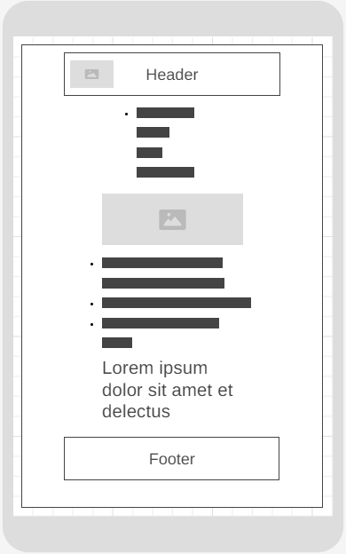
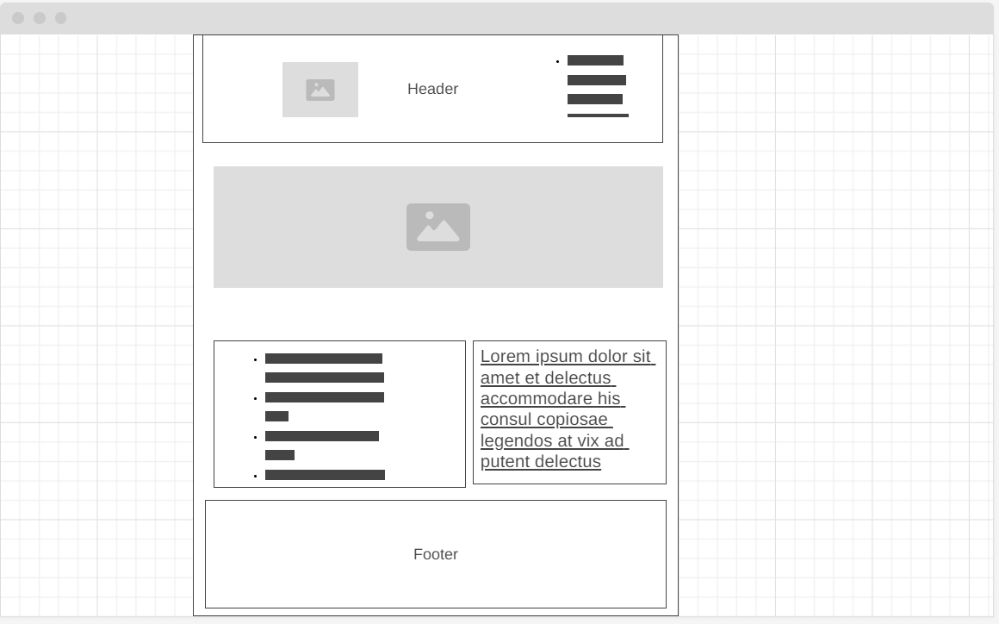
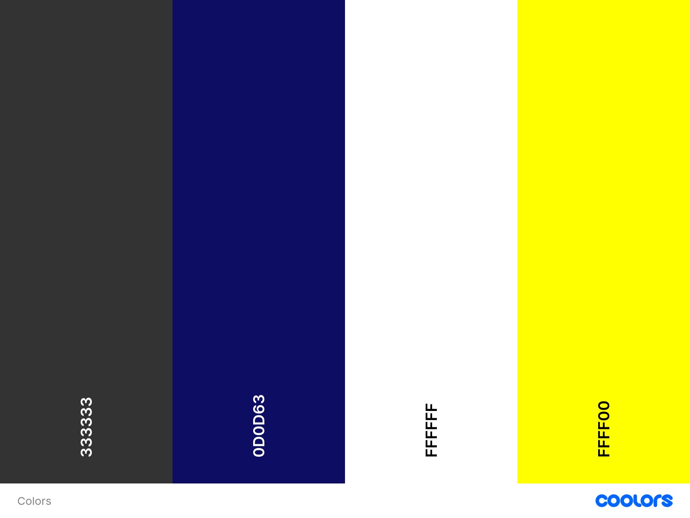
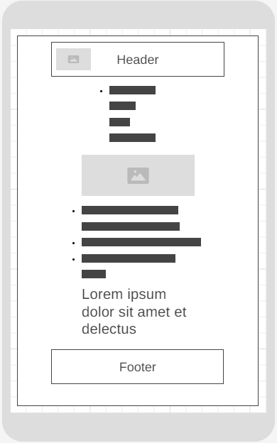
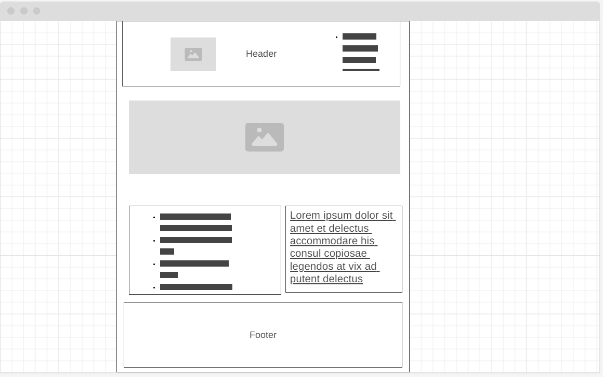

Mobile View Wireframe:
Desktop View Wireframe:
Name: Trujillo Sports Club
Reason: The reason is to serve as a central club for sports enthusiasts in Trujillo, Peru, offering a wide range of sports gear and resources. It emphasizes the local aspect (Trujillo) and the focus on sports gear (Sports Club), making it easily identifiable and memorable for the target audience.
Trujillo Sports Club aims to provide a comprehensive resource for sports enthusiasts in Trujillo, Peru. The website will feature a detailed product catalog with descriptions and prices, offer a location map and contact information, present special offers, and host a blog with sports-related tips, local events. The overarching goal is to promote an active and healthy lifestyle by providing quality sports gear and expert advice.
Scenario 1: A visitor is looking to purchase soccer shoes and t-shirts for a championship in Trujillo's climate. They want detailed descriptions, pricing, and customer reviews to help make an informed decision.
Scenario 2: A local sports team organizer wants to inquire about bulk discounts for soccer equipment. They are looking for contact information to reach out to discuss potential partnerships or group purchases.
Describes the Color scheme for Trujillo Sports Club
| Background Heading Footer | Headers | Texts | Hover |
Roboto Heading Font:
Used for main headings and section titles to provide a bold and clear hierarchy.
Roboto Body Font:
Used for paragraph text and general content to ensure readability and consistency across the site.
Below are simple wireframes for both mobile and desktop views of the home page layout.
Mobile View Wireframe:
Desktop View Wireframe:
